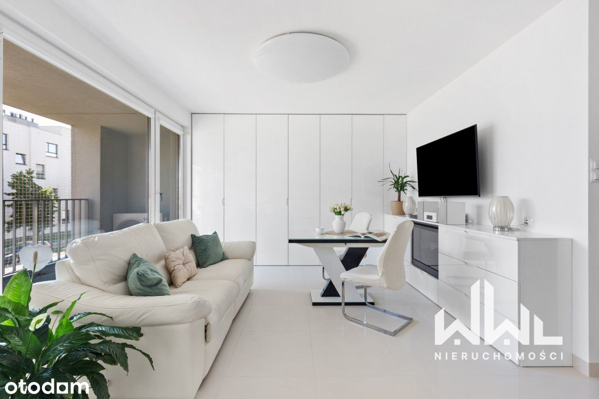
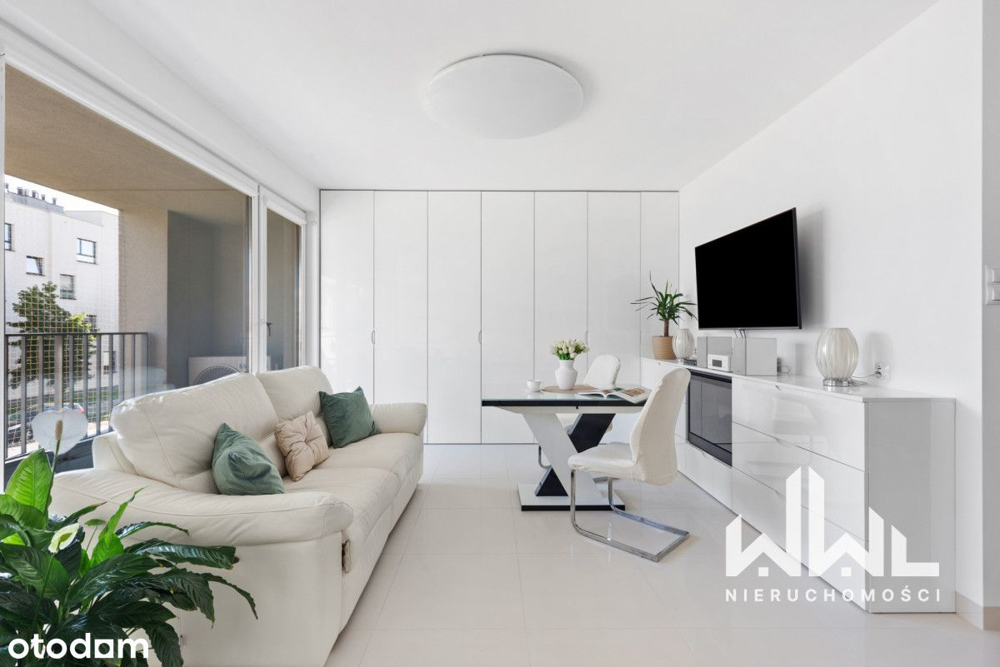
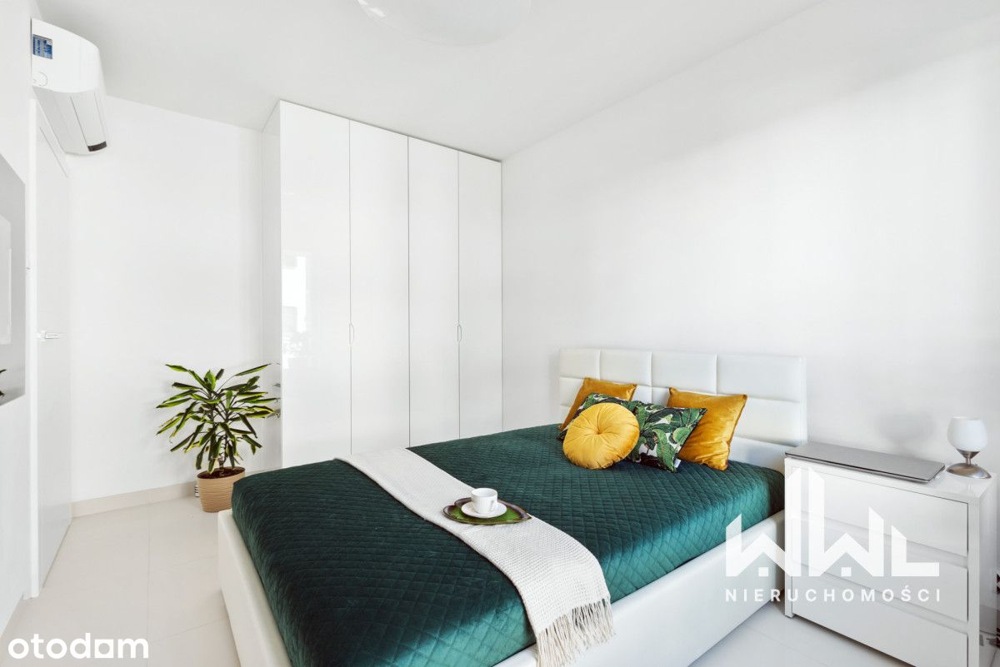
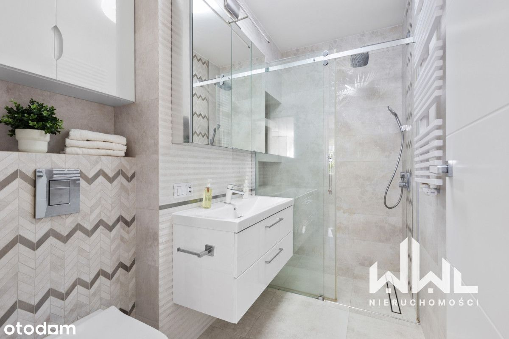
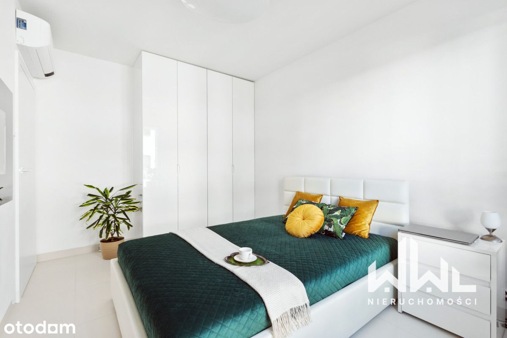
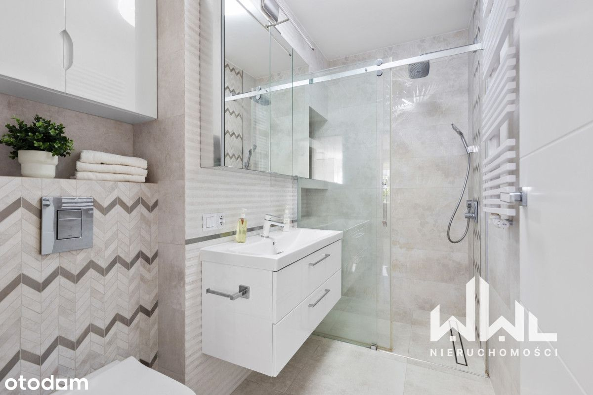
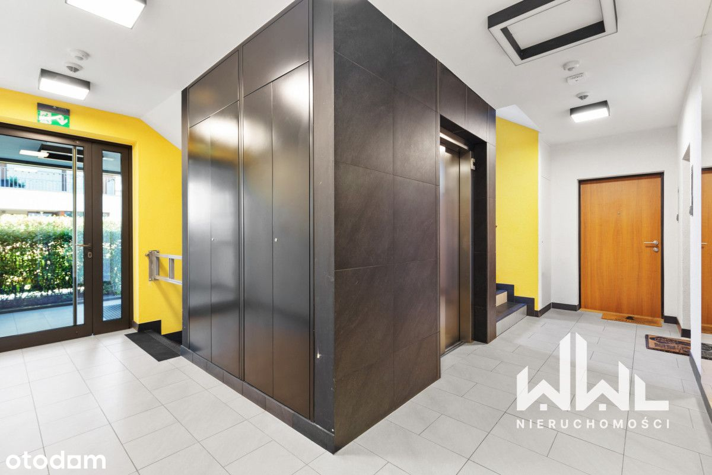
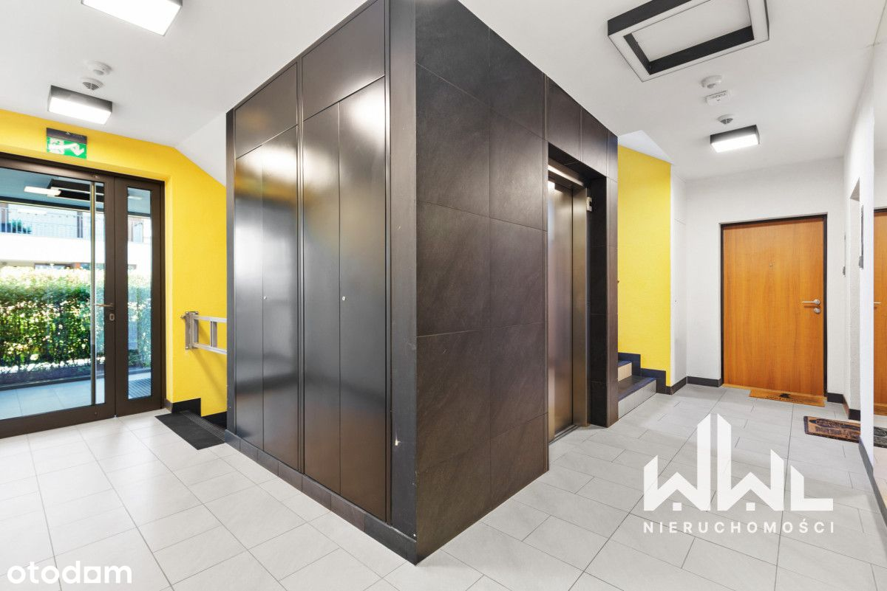
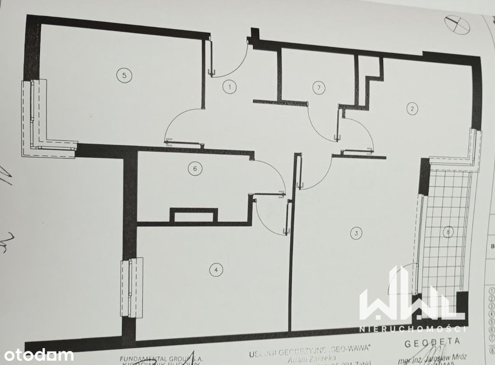
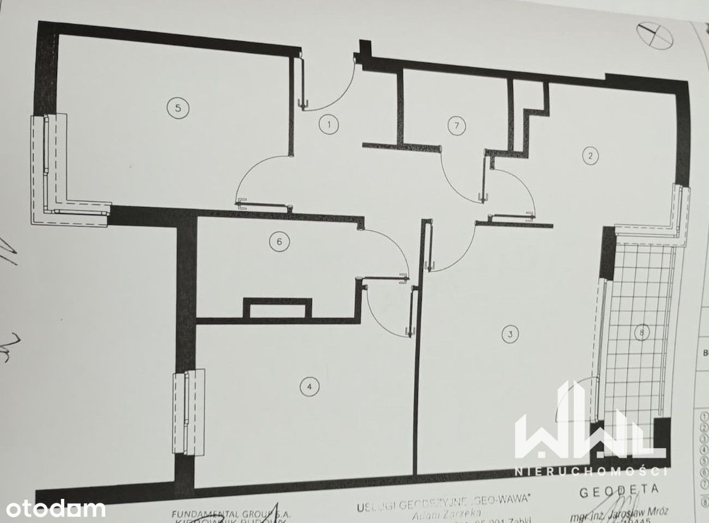

Wysoki standard -Skm Metro Wileńska ciche
Pohulanka, Warszawa Elsnerów
1 350 000 PLN
68.48 m2
3 pokoje
1 piętro
Nowoczesne mieszkanie położone na warszawskim Zaciszu, w spokojnej części dzielnicy Targówek. Nieruchomość znajduje się na kameralnym, zamkniętym osiedlu z 2018 roku z niską zabudową (3-piętrowe budynki) i starannie zagospodarowanymi terenami zielonymi - alejkami spacerowymi i nasadzeniami kwiatowymi.
Najważniejsze informacje
Powierzchnia: 68,48mkw
Piętro: 1 z 3
Rok budowy: 2018
Stan: idealny, gotowe do wprowadzenia
Forma własności: pełna własność z księgą wieczystą
Dostępność: od ręki
Układ mieszkania
- Przestronny i dobrze doświetlony salon z wyjściem na loggię.
- Półotwarta, funkcjonalna kuchnia z pełnym wyposażeniem.
- Dwie oddzielne sypialnie zapewniające prywatność.
- Dwie łazienki - jedna z prysznicem walk-in, druga z wanną z hydromasażem.
- Dodatkowo: Zabudowa szaf wykonana na wymiar.
- Ogrzewanie podłogowe w salonie.
- Klimatyzacja z oczyszczaczem powietrza.
- Dwa kominki elektryczne wprowadzające przytulny nastrój.
- Regulowane oświetlenie w całym mieszkaniu.
Wykończenie
Wnętrze zostało zaprojektowane w ponadczasowej, jasnej kolorystyce. Dominują biele i naturalne odcienie, które nadają przestrzeni elegancji i lekkości. Użyto materiałów wysokiej jakości, dzięki czemu mieszkanie nie wymaga żadnych nakładów finansowych.
+ dwa miejsca postojowe na parkingu podziemnym (płatne dodatkowo 50tys każde)
Atuty osiedla
Nowoczesne, monitorowane osiedle z kontrolą dostępu.
Plac zabaw dla dzieci, boisko, strefy wypoczynku dla mieszkańców.
Dużo zieleni i spokojne otoczenie.
Lokalizacja i komunikacja
Doskonała komunikacja miejska: autobusy 170, 156 i 356, a także kolej SKM/KM - przystanek Zacisze Wilno (dojazd do metra Wileńska w 5 minut).
Blisko trasy S8, co zapewnia szybki dojazd do centrum i innych części Warszawy.
W okolicy liczne sklepy, restauracje, punkty usługowe, szkoły i przedszkola.
W pobliżu tereny zielone sprzyjające rekreacji i spacerom.
Mieszkanie łączy komfort, elegancję i spokój z doskonałą lokalizacją. To idealna propozycja dla rodzin, par lub osób szukających gotowego lokum w zielonej części Warszawy.
Zachęcam do kontaktu i umówienia prezentacji. Mieszkanie dostępne od zaraz.

 



 



 
 
